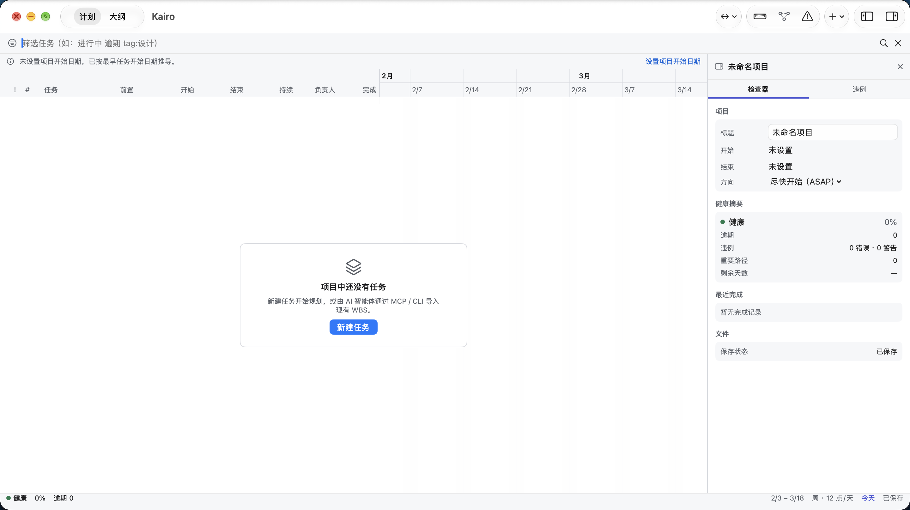

把工作拆成 WBS
任务、分组和里程碑，每一项都带工时估算。AI 可以通过 MCP 或 CLI 导入并更新这份计划。
Claude Code、Codex 以及其它智能体一项一项往下干。KaidoPlan 把 WBS、依赖和日期放进一份本地计划，算出真正决定你什么时候能交付的那条链。
macOS 14+ · 30 天全功能试用，不需要账号 · 本地 .kaido 文件

现在每个 AI 项目管理工具都已经给了你一个放任务的地方。但很少有工具会算：哪条依赖链决定了你的交付日期，或者上游滑了两天、正好吃掉你的评审窗口。这份算术，待办清单不做。
任务、分组和里程碑，每一项都带工时估算。AI 可以通过 MCP 或 CLI 导入并更新这份计划。
依赖、时限和工作日历推算出真实日期。关键路径告诉你项目最早什么时候能完成——以及哪些任务还有余量。
循环依赖、超出项目窗口的日期、截止日期冲突、被卡住的关键任务，在工作台里变红。赶在滑期传到客户那里之前，而不是之后。
智能体会报进度，但它几乎不会报「这份计划已经加不起来了」。跑一次校验，算术结果会用红字回来。
这里没有一处是 AI 写错的代码，全都是排期对不上——而这一种错，任何一份聊天记录都不会告诉你。示例计划。界面截自 macOS 应用。
人设定项目目标、日期和验收标准。
AI 拆解 WBS、建立依赖并计算排期。
人在甘特图检查进度、冲突和关键路径。
AI 逐项实现并回写状态，计划持续更新。
下载下来就是全功能试用：30 天，所有功能打开，不要账号、不要绑卡。到期后软件不会停，只是降到下面的免费版。你已有的文件和排期不会被锁、不会被导出走、更不会被删除。
$0 长期
整个 macOS 工作台：WBS、分组与里程碑；依赖关系、甘特图与关键路径；计划校验与进度跟踪；本地 .kaido 文件，不需要账号。
AI 可以读你的计划（通过 MCP / CLI），能回答「还剩什么、哪里有冲突」，但不能改。交付报告导出每月 3 次，预览不限次。
$9.99 / 年
AI 可以回写：通过 21 个 MCP / CLI 工具更新任务状态、实际日期、新增任务——它一边干活，计划一边自己更新。交付报告导出不限次数。
随时取消。
14 天无理由退款 · 退款政策
只少两样：AI 的回写权限，和无限导出。其余都在——文件不离开你的机器，甘特图照常打开，报告照常预览，免费版可以一直用来做计划。这是降级，不是关停。
不要账号，永远不要。软件自己唯一的网络请求是检查更新。计划存在本地 .kaido 文件里，可以像任何文档一样拷贝、备份、放进 Git。
14 天内无理由退款，不问原因、不做挽留问卷。退款政策只有一页，因为它只有一条规则。
应用一条命令，CLI 与 MCP 服务一条命令。
brew install --cask cygnusyang/kaidoplan/kaidoplan
brew install cygnusyang/kaidoplan/kaidoplan-cli